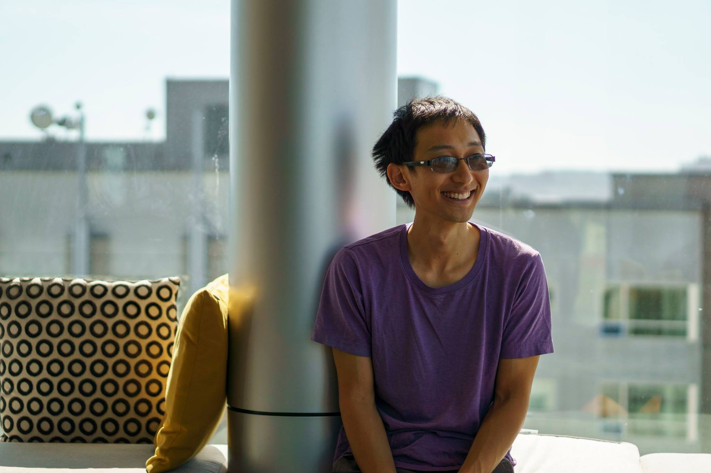

Hi! I'm Jeff Wu, aka wuthejeff or wuthefwasthat.
I'm a researcher and engineer living in the Bay Area. I think about AI and other technologies, and how they affect society. I want the future to be filled with diverse, interesting, and enjoyable experiences.
Here are some